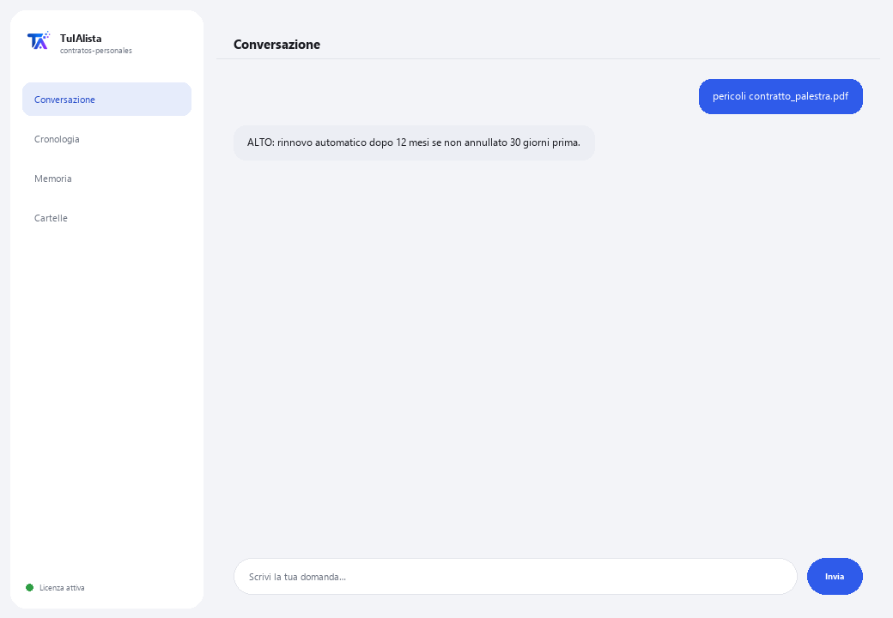

Agente Contratti Personali
Ti spiega con parole semplici qualsiasi contratto che stai per firmare e ti avvisa delle clausole che potrebbero danneggiarti.
Cosa risolve e cosa ti serve?
Un avvocato addebita tra 100 e 300 dollari per rivedere un contratto. Questo agente lo fa istantaneamente, tutte le volte che vuoi, con totale privacy, per i contratti di tutti i giorni: affitto, telefonia, palestra, credito, un lavoro.
- Ti serve: la tua chiave di licenza (TIA-XXXX-XXXX-XXXX-XXXX) e il contratto (o la cartella con i tuoi contratti). Niente Python né conoscenze tecniche.
- Primo risultato in meno di 5 minuti: installi, attivi, carichi il tuo contratto con carica ed esegui pericoli per vedere quali clausole rivedere.
- Il tuo contratto non lascia mai il tuo computer — l'analisi gira in locale.
soporte@tuialista.com o visita tuialista.com/soporte — di solito rispondiamo lo stesso giorno lavorativo.1 Cosa fa questo agente
Gli indichi il contratto (o la cartella con i tuoi contratti) e lui:
- Lo spiega in linguaggio quotidiano: cosa firmi, a cosa ti impegni, quanto paghi e per quanto tempo.
- Rileva clausole pericolose per il consumatore (rinnovo automatico, permanenza forzata, penali, aumenti di prezzo unilaterali, addebiti nascosti, domiciliazione bancaria, cessione di dati, tassi d'interesse alti...).
- Elenca i tuoi obblighi concreti (cosa devi fare, quando e quanto).
- Estrae tutti i costi e stima il costo totale se adempi l'intero contratto.
- Spiega come e quando puoi annullare e quanto ti costa.
- Suggerisce domande da fare prima di firmare.
Risultato: firmi capendo davvero cosa accetti.
2 Installazione (2 minuti)
Per Windows. Non serve internet permanente né caricare nulla sul cloud.
Scarica l'installer da tuialista.com/descargar (agente Contratti Personali) e aprilo. Crea un collegamento sul desktop con il logo — non richiede Python né terminale.
Doppio clic sulla nuova icona. Incolla la tua chiave di licenza (ricevuta via email all'acquisto) e premi Attiva. Vedrai un segno di spunta verde quando è valida.
Seleziona la cartella con i tuoi contratti e premi Inizia a usare l'agente. La prossima volta si avvia direttamente — ricorda la tua chiave e la tua cartella.
3 Come usarlo
L'agente apre una finestra di chat, come un'app di messaggistica — non è uno schermo nero da programmatore. Prima carichi il contratto, e poi scrivi ogni richiesta nella stessa casella di testo:

> carica <file>Carica il contratto. Dopo puoi usare gli altri comandi con quel contratto. Es.: carica contratto_palestra.pdf.
> spiega <file>La spiegazione chiara: cos'è il contratto, a cosa ti impegni, cosa possono addebitarti in più, quando termina e come uscirne.
> pericoli <file>Clausole che possono danneggiarti, classificate per livello (ALTO / MEDIO), con il frammento del contratto dove appaiono. È l'unica azione che funziona al 100% in locale, senza IA.
> obblighi <file>Elenco concreto: cosa, quando e quanto (es.: “Pagare 699 al mese nei primi 5 giorni di ogni mese per 12 mesi”).
> costi <file>Rata mensile, iscrizione, cauzioni, penali, interessi, IVA... e il costo totale stimato se adempi l'intero contratto.
> annulla <file>Se puoi annullare quando vuoi o c'è un termine minimo, come si annulla, con quanto anticipo avvisare e cosa ti addebitano.
> domande <file>Domande concrete da fare prima di firmare.
> domanda libera?Con un contratto caricato, chiedi quello che vuoi, es.: possono aumentarmi la rata mensile durante il contratto?
> esciTermina la sessione (funziona anche exit).
4 Esempi di uso comune
Prima di firmare per una palestra
carica contratto_palestra.pdf → spiega contratto_palestra.pdf → pericoli contratto_palestra.pdf
Capire un credito
costi contratto_credito.pdf → annulla contratto_credito.pdf
Prepararti con domande
domande contratto_affitto.pdf
Una domanda puntuale
cosa succede se voglio uscire prima dei 18 mesi?
5 Domande frequenti
Il mio contratto viene caricato su internet?
Quali formati accetta?
Questo sostituisce un avvocato?
Come rileva le clausole pericolose?
Il costo totale calcolato è esatto?
Salva i miei contratti?
In quale lingua risponde?
Legge un PDF scansionato?
Posso analizzare più contratti?
Modifica il mio contratto?
6 Risoluzione dei problemi
Non legge un .pdf o .docx
Indica che non è riuscito a leggere il contratto
Non rileva una clausola che so essere presente
Mostra “Licenza non valida” o chiede di riconnettersi
“Nessun fornitore IA configurato”
Nessuna di queste soluzioni ha risolto il tuo problema? Scrivici direttamente — saremo felici di rivederlo con te.
soporte@tuialista.com o visita tuialista.com/soporte — di solito rispondiamo lo stesso giorno lavorativo.7 Privacy e riservatezza
Il tuo contratto non lascia mai il tuo computer.
- L'agente legge e analizza il contratto in locale, sul tuo stesso dispositivo. Non lo carica su nessun server né lo condivide con nessuno.
- Il rilevamento di clausole pericolose (pericoli) avviene al 100% sul tuo dispositivo.
- L'unica cosa che viaggia su internet è: (1) una verifica che la tua licenza sia attiva — che non include il tuo contratto —, e (2) per le spiegazioni e domande, viene inviato un frammento del contratto (fino a circa 7.000 caratteri) al motore IA per redigere la risposta.